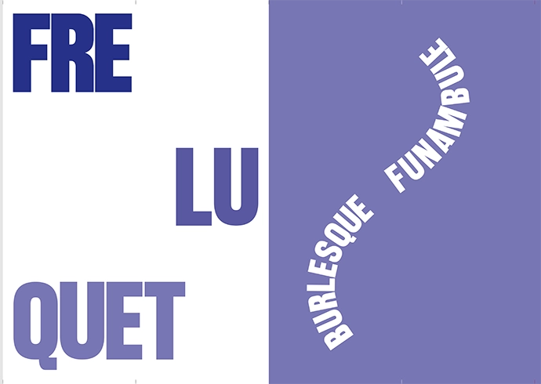
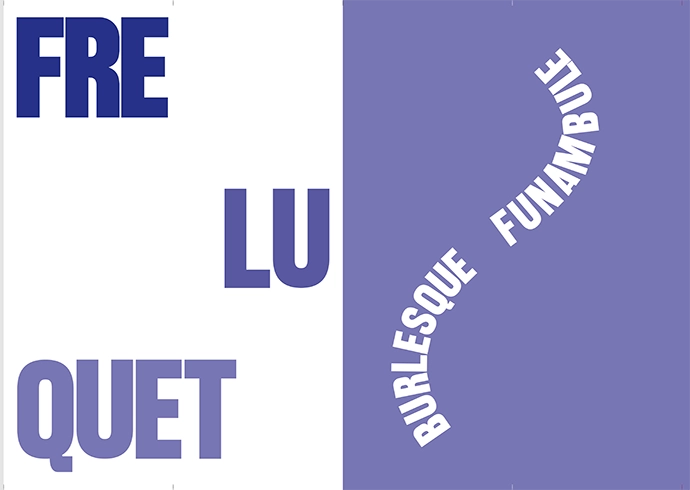

Specimen Typographique : AFFIGERE
AFFIGERE est un caractère typographique qui a été repris d'un caractère déjà existant créé à l'origine par l'ESAD de Valence.
Il a été réinterprété et designé par Alexandre D'Hubert, Romain Laurent et Daphné Le Jeune.
C'est un caractère sans empattements qui est semblable à celui utilisé pour des textes formels de rue comme « défense d’afficher ».
Sans empattements, ce caractère s’inscrit dans les catégories de caractères modernes, cependant des caractères similaires ou construits plus ou moins de la même façon pouvaient être utilisés par des graphistes du 19ème siècle comme H.Toulouse-Lautrec ou encore R.Loewy.

Comme je considère ce caractère typographique plutôt moderne mais qu’il a été utilisé pendant des périodes antérieures, j’ai décidé de présenter « Affigere » avec des mots qui s’inscrivent dans un certain néologisme de langage comme celui que Raymond Queneau utilise régulièrement dans ces écrits comme dans les ouvrages " Exercice de style " ou " Zazie dans le métro ".
Le specimen est accompagné d'une iconographie qui illustre des affichages urbains quotidiens mais également des néologismes de languages qui sont plus récents que ceux de Raymond Queneau.
 
